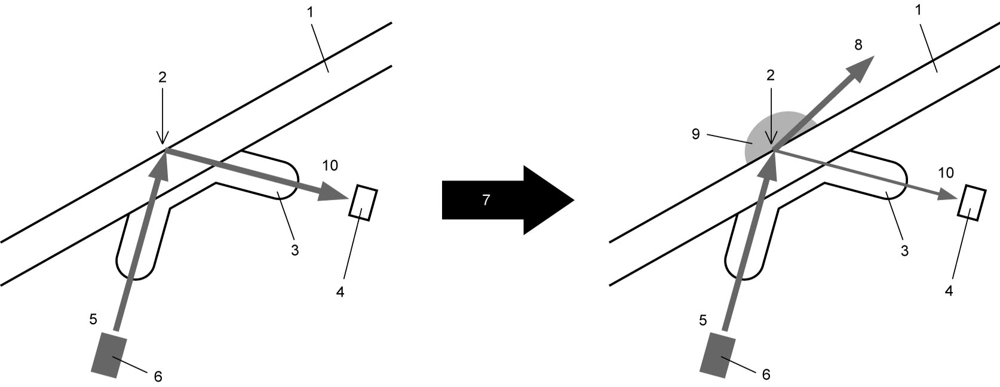

9D
| Rain / Light Sensor Description (If Equipped) |
•The rain / light sensor is located on the windshield inside surface at the place where the inside rearview mirror is installed. This single sensor can sense both raindrops and outside light brightness.
•The signal from the rain / light sensor is transmitted to BCM via the CAN communication system.
•Based on the information contained in the signal from the rain / light sensor, BCM makes interrelated control of both the auto-on headlight system and the rain-sensing wiper system to automatically turn on/off the relevant lights and wiper motor and adjust their operation according to the outside lighting and rain conditions. Interlocked operation between both systems can be canceled or engaged using the user customization function.
•The signal from the rain / light sensor is transmitted to BCM via the CAN communication system.
•Based on the information contained in the signal from the rain / light sensor, BCM makes interrelated control of both the auto-on headlight system and the rain-sensing wiper system to automatically turn on/off the relevant lights and wiper motor and adjust their operation according to the outside lighting and rain conditions. Interlocked operation between both systems can be canceled or engaged using the user customization function.
Light Sensing Principle
The rain / light sensor incorporates 2 light sensing devices, one for sensing the light from the front and the other for sensing the light from above. This two-sensing-device configuration enables the sensor to determine whether the detected light intensity change is temporary or not.
Rain-Sensing Principle
There is an LED and a photo diode inside the rain / light sensor. The light from the LED is reflected off the detection surface of the windshield and then is received by the photo diode. If waterdrops are present on the outside surface of the windshield, part of the light from the LED goes out through a waterdrop without being reflected off the detection surface, so the photo diode receives a reduced amount of light. The rain-sensing wiper system determines the intensity of rainfall based on the rate of the reduction in the amount of the received light.

 "Expand image")
| 1. | Windshield | 5. | LED light | 9. | Adhesion of waterdrop |
| 2. | Detection surface | 6. | LED | 10. | Reflected light |
| 3. | Lens | 7. | Adhesion of waterdrop | ||
| 4. | Photo diode | 8. | Non-reflected light |